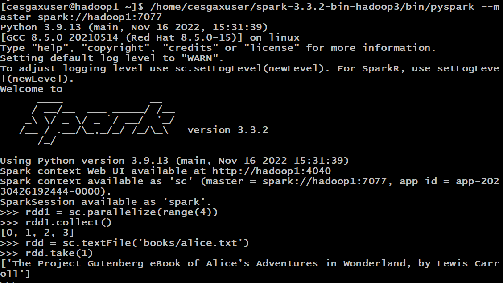

⚝ Apache Spark — üßæ Instalaci√≥n

Faremos unha instalación de Apache Spark en 4 máquinas con ClusterShell, un programa que permite enviar á vez comandos a varias máquinas.
A presente instalación contempla 1 master e 3 nodos (ou 4 nodos de actuar o máster tamén como worker). Se tes un número diferente de máquinas, deberás mudar nos comandos a parte do [1-4] ou [2-4] adaptándoo ás túas necesidades.
Consideraremos os seguintes nomes de máquinas:
10.X.Y.101 hadoop1 hadoop1.local master1.local
10.X.Y.102 hadoop2 hadoop2.local
10.X.Y.103 hadoop3 hadoop3.local
10.X.Y.104 hadoop4 hadoop4.local
Imos empregar Rocky 8.5 v2, sen embargo, en caso de empregar Debian, podemos empregar apt en lugar de dnf. Consideramos tamén o contorno do cesga con usuario por defecto: cesgaxuser e $HOME en /home/cesgaxuser/.
Se estás nun contorno Cloud no que debes destruir as instancias por tema de custes e pódense asignar distintos enderezos IP, lembra sempre facer:
-
Editar o arquivo
/etc/hostscos nomes que correspondan ás novas IP. -
Borrar o known_hosts:
-
Rexenerar o
/etc/hosts: -
Copialo ao resto de nodos:
-
Copia o
/etc/hostsao resto de nodos:
Instalación de Clustershell
-
Activar repo:
-
Instalación de paquete:
Descargar a máquina de Java (Amazon Corretto)
Configuramos o repo de Amazon Corretto e instalamos o paquete de Java en tódolos nodos:
-
Importamos a chave do repositorio:
-
Baixamos o repositorio e o configuramos nos nodos:
-
Instalamos o paquete de Java deste novo repostorio:
-
Configuramos as variables do contorno:
nano .bashrcas liñas:.bashrcexport JAVA_HOME='/usr/lib/jvm/java-11-amazon-corretto/' export EDITOR=nano export PATH=$PATH:$JAVA_HOME/bin-
Se non temos o editor nano, podemos empregar vi. Lembra para gardar e sair en nano: Ctrl+O [ENTER], Ctrl + X. En vi: [ESC] :wq! [ENTER]
-
Logo de gardar, lembra recargar as variables de contorno!
-
-
Copia ao resto de nodos esta configuración:
Descarga de Apache Spark
Se non che funciona a descarga, pode ser que teñas que averiguar a nova ruta por existir unha nova versión. Podes ir ao nivel superior da páxina e buscar a nova versión: https://dlcdn.apache.org/spark/.
Segundo as túas necesidades podes ter que escoller entre a versión con ou sen Apache Hadoop.
Outra opción se contas con pouco ancho de banda é baixar unha vez o arquivo dende o master e facer un --copy a --dest con Clustershell.
-
Baixamos Apache Spark (actualizado a 20 de abril de 2024):
clush -l cesgaxuser -bw hadoop[1-4] \ sudo curl -L -O https://dlcdn.apache.org/spark/spark-3.5.5/spark-3.5.5-bin-hadoop3.tgz \ -o /home/cesgaxuser/spark-bin-hadoop3.tgz sudo mv spark-3.5.5-bin-hadoop3.tgz spark-bin-hadoop3.tgz- Gárdase no arquivo
spark-bin-hadoop3.tar.gzpara que futuras versións destes apuntes non teñan que ser mudados tódolos comandos por mor da versión.
- Gárdase no arquivo
-
Descomprimimos simultáneamente en tódolos nodos:
-
Configuramos as variables de contorno por comodidade
nano .bashrc:.bashrcexport SPARK_HOME=$HOME/spark-bin-hadoop3 export PATH=$PATH:$SPARK_HOME/sbin/:$SPARK_HOME/bin/- Logo de gardar, lembra recargar as variables do contorno!
-
Copia ao resto de nodos esta configuración:
-
Copiamos o template de configuración:
-
Editamos o novo arquivo de configuración:
- Dentro do arquivo, mudamos a configuración de Apache Spark para que empregue YARN (Yet Another Resource Negociator):
-
No nodo master executamos o script
start-master.sh(estamos a executar todo como root): -
Nos nodos slaves executamos o
start-worker.sh:
Instalación de PySpark
-
Instalamos Python 3.9:
- Lembra que a nivel sistema podes seleccionar o python por defecto que queres cos comandos:- ⚠️ Considera que quizás a mellor opción sexa instalar miniconda e dende ahí ter un contorno estable que poidas importar a tódolos nodos cunha versión concreta de funcional de: Python, ipython, pyspark, jupyterlab, ipykernel, nbclassic, nbconvert, py4j, pandas, numpy, pyarrow, fastparquet...
-
Lanzar pyspark:
-
Configurar para que o worker arranque no inicio do servidor:
- De iniciarseche vi, preme a tecla INS para habilitar inserción de texto neste editor. Lembra que para gardar debes premer a tecla ESC e despois
:wq!e logo premer ENTER.
- De iniciarseche vi, preme a tecla INS para habilitar inserción de texto neste editor. Lembra que para gardar debes premer a tecla ESC e despois
-
E no master o mesmo, pero con comando master:
- E meter no arquivo:
-
Lembra darlle un reboot a tódalas máquinas para ver que todo se está a executar ben ao inicio:

Configurando Spark para que funcione con Hadoop
O arquivo .bashrc tamén debe ter a config de Apache Hadoop do exercicio anterior:
En .bashrc asegúrate que tes:
export HADOOP_HOME='/home/cesgaxuser/hadoop-3.2.4'
export HADOOP_CONF_DIR=${HADOOP_HOME}/etc/hadoop
export PATH=${PATH}:${HADOOP_HOME}/bin:${HADOOP_HOME}/sbin
export LD_LIBRARY_PATH=${HADOOP_HOME}/lib/native:$LD_LIBRARY_PATH
E lembra ter todas as variables definidas nos arquivos -env.sh correspondentes.
Lanzando traballos con spark-submit
Executamos dende o master con spark-submit un traballo, que debería enviarse ao hadoop.
Modo cluster seleccionando manualmente master de hadoop:
spark-submit --deploy-mode cluster \
--master spark://hadoop1:7077
--class org.apache.spark.examples.SparkPi \
$SPARK_HOME/examples/jars/spark-examples_2.14-3.4.2.jar 2
Modo cliente:
spark-submit --deploy-mode client \
--class org.apache.spark.examples.SparkPi \
$SPARK_HOME/examples/jars/spark-examples_2.14-3.4.2.jar 2
Miramos nos logs de hadoop que se executara.
Lendo arquivos do HDFS dende jupyterlab
Para ler arquivos do HDFS dende yarn / jupyterlab / pyspark hai que:
-
Crear o directorio de usuario no HDFS:
-
Poñer a ruta completa no código:
- Ollo! se probas dende pyspark, mira que acceda ao cluster e non cree unha instancia nova propia.
Lanzando exemplos
Se tes Apache Hadoop instalado do paso anterior, lembra que tamén podes probar os exemplos con:
yarn jar hadoop-3.2.4/share/hadoop/mapreduce/hadoop-mapreduce-examples-3.2.4.jar \
wordcount "books/*" output
Comandos e outros
Haberá que documentar:
-
hdfs dfs -put ARQUIVO
-
hdfs dfs -ls
-
yarn top
-
yarn node -list
-
yarn application (-list/-kill)
-
jps -> De java (non Spark ou Hadoop)